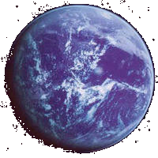

| HOME | LATEST NEWS | DAILY HISTORY | GIVEAWAYS | SUPPORT US! |
|  | This planet is called Kamino. The planet is beyond the
Outer Rim and south of the Rishi Maze. The Kaminoans are best known for the clones they make that were used as the army of the Rupublic. However, their main use was for the Emperor as a way of killing all the Jedi through Order 66. The planet is surrounded by water, with only a few laboratories coming out of the surface. It constantly rains there and nevers stops. To find out more about the Kaminoans past, click here. | |
 |


 | |